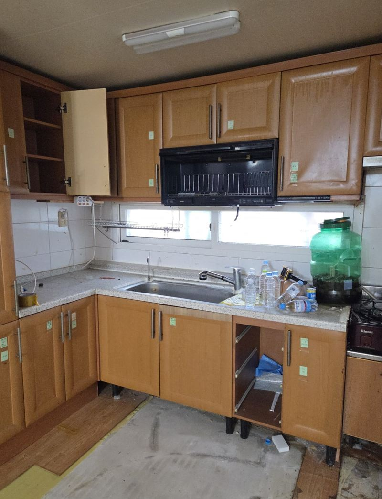
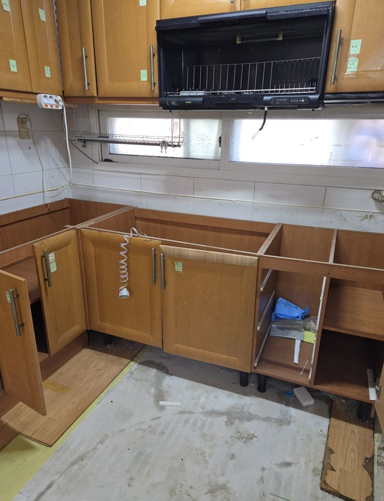
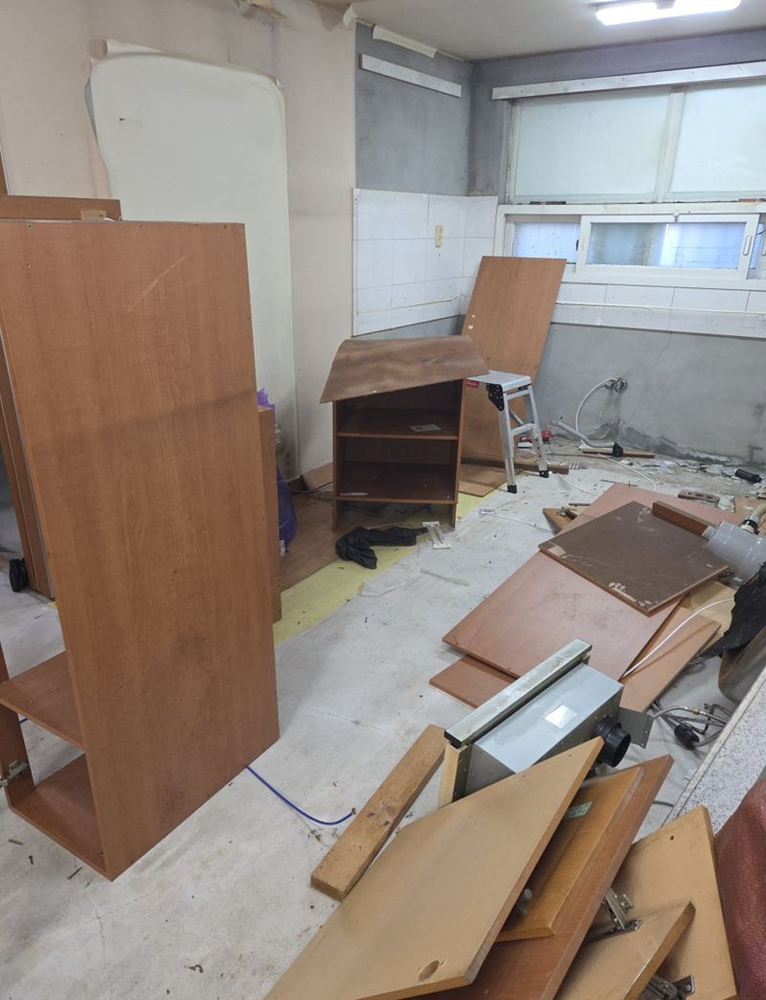
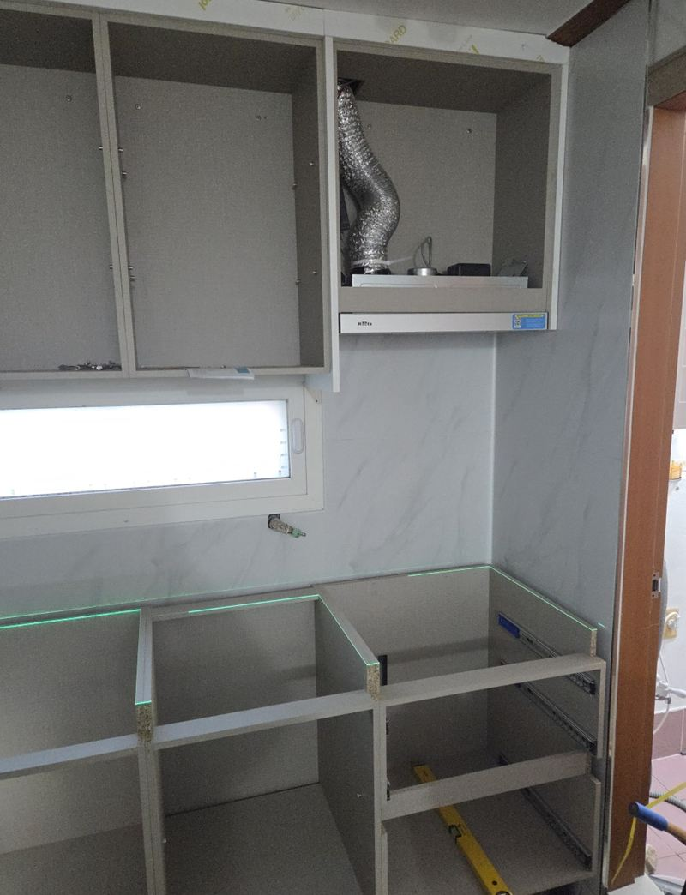
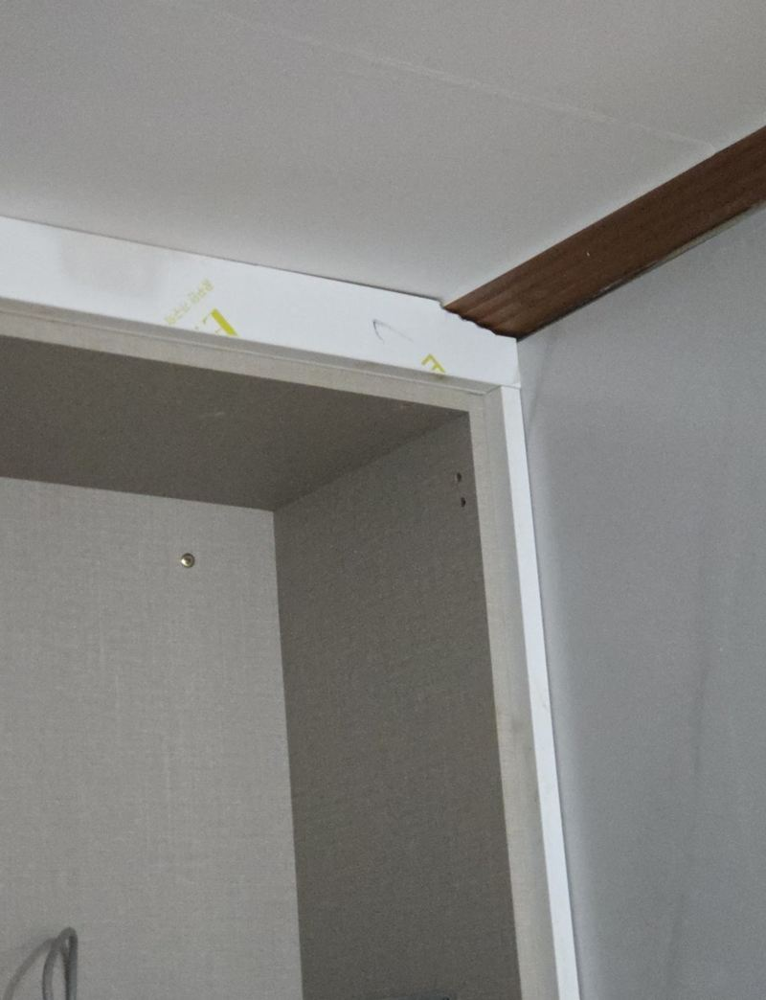
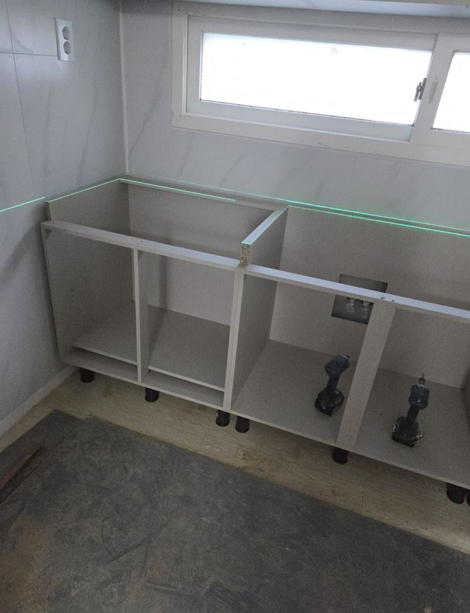

동탄 주방 싱크대 상하부장 철거·제작 비용
← 밀어서 전후 비교 →
싱크볼 둘레 실리콘이 오래돼 틈이 벌어지면서, 그 사이로 물이 몇 년간 조금씩 스며든 주방이었어요. 하부장 합판은 물을 먹어 부풀고, 문짝은 뒤틀리고, 상판도 살짝 들떠 있었어요. 고객님은 이참에 주방 전체를 밝은 화이트 톤으로 바꾸고 싶어 하셨어요. 위아래 장을 모두 걷어 내고 누수 흔적을 확인한 뒤, 새로 잰 치수로 맞춤 제작해 넣었어요.
| 현장 | 화성 동탄 아파트 주방 |
|---|---|
| 상태 | 싱크볼 실리콘 틈으로 누수, 하부장 합판 팽창, 문짝 뒤틀림, 상판 일부 들뜸 |
| 한 일 | 상부장 → 하부장 철거 → 배관·누수 확인 → 벽 수직·바닥 수평 재측정 → 미들타일 교체 → 맞춤 상하부장 설치 |
| 요청 | 전체 화이트 톤, 미들타일 교체 포함 |
누수 난 하부장은 왜 부분 수리가 어려울까
합판 속까지 물이 스며들면 겉은 멀쩡해 보여도 판의 힘이 약해져요. 하부장은 상판 무게를 받치는 자리라, 한 칸만 바꿔 끼우면 옆 칸이 버티지 못해 다시 틈이 생기기 쉬워요. 이 주방은 여러 칸이 동시에 부풀어 있었고 나사도 헐거워져 있어서, 부분 교체보다 전체를 다시 짜는 게 오래 쓰는 방법이었어요.


철거에서 설치까지
상부장부터 철거
위에 매달린 장을 먼저 내려야 아래를 뜯을 때 흔들리지 않아요. 이어서 하부장을 해체하고 배관을 드러내 물이 어디서 새고 있었는지 다시 확인했어요.

벽과 바닥 다시 재기
오래된 아파트는 벽이 완전히 수직이 아니고 바닥도 조금씩 기울어 있어요. 철거한 상태에서 다시 재서 그 수치를 새 장 제작에 반영했어요.
미들타일 교체
상부장과 상판 사이 벽에 붙는 미들타일도 새것으로 바꿨어요. 장을 다 뗀 상태라 타일 작업이 깔끔하게 들어가요.

맞춤 하부장·상부장 설치
수평을 맞춰 하부장을 놓고 상판을 올린 뒤, 상부장을 벽에 단단히 고정했어요. 싱크볼 둘레 실리콘은 이번엔 빈틈없이 둘렀어요.


맞춤 싱크대 비용이 달라지는 지점
| 항목 | 달라지는 이유 |
|---|---|
| 주방 길이·구성 | ㄱ자·일자, 상부장 칸 수, 키큰장 유무 |
| 상판 재질 | 인조대리석·스테인리스 등 재질과 두께 |
| 추가 공사 | 미들타일, 배관 위치 변경, 누수 자리 보수 |
| 철거·폐기 | 기존 장 양과 처리 방법 |
누수가 있었던 집은 철거 후 바닥과 벽이 젖어 있는지 먼저 보고, 말리거나 보수한 뒤 새 장을 넣어요. 그래야 새 싱크대가 다시 같은 문제를 겪지 않아요.
싱크대 전체 교체, 이럴 때 고민하세요
- 여러 칸 바닥이 부풀었어요한두 칸이면 부분 수리, 여러 칸이면 전체 교체가 오래가요.
- 문짝이 뒤틀려 맞지 않아요몸통이 틀어졌을 가능성이 커요.
- 상판이 들뜨고 흔들려요아래 장이 상판을 제대로 받치지 못하고 있어요.
- 주방 분위기를 바꾸고 싶어요색과 구성을 새로 정해 맞춰 짜는 게 만족도가 높아요.
싱크대 철거·제작 질문
공사 기간 동안 주방을 못 쓰나요?
철거부터 설치까지는 싱크대를 쓸 수 없어요. 일정을 미리 말씀드리니 그동안 쓰실 방법을 준비해 주세요.
상판만 새것으로 바꿀 수도 있나요?
하부장이 튼튼하면 상판만 교체하는 방법도 있어요. 누수 흔적이 있다면 아래 장 상태부터 봐요.
색은 어떻게 고르나요?
문짝 샘플을 보고 바닥·벽 색과 맞춰 골라요. 이 현장은 전체 화이트로 정했어요.
가스레인지·후드도 다시 달아 주나요?
새 장에 맞춰 다시 연결하거나, 원하시면 함께 교체해요.
누수 원인이 배관이면요?
철거하면서 배관 연결부를 확인하고 필요한 곳은 새로 연결해요.
미들타일 없이 패널로 마감할 수도 있나요?
가능해요. 청소가 쉬운 패널 마감도 많이 해요.
철거한 싱크대는 어떻게 하나요?
철거한 장과 상판은 정리해서 수거해요. 처리 방법은 상담할 때 정해요.
다른 싱크대·수납장 현장
- 부천 싱크대 이사 이전 재설치 비용과 방법
- 부천 아일랜드 식탁 리폼으로 공간 넓히는 방법
- 동탄 지식산업센터 싱크대 설치, 업체 고르는 기준
- 고양 싱크대 하부장 밑판 썩음, 교체 방법
- 고양 키큰장 리폼으로 상부장 만드는 방법
- 화성 빌트인 오븐 철거 후 하부장 제작 비용
- 종로 싱크대 하부장 곰팡이 보수 방법
- 파주 사무실 이전 싱크대 철거 비용과 순서
- 성동 사무실 이전 시 기존 싱크대 재설치 순서
- 경기광주 부엌 수납장 교체 비용과 순서 · 블로그
- 하남 펜트리장 제작·이전 설치 방법 · 블로그
- 화성 상부장 처짐 없이 벽면 고정하는 방법 · 블로그
- 종로 오픈 수납장 문짝 새로 다는 방법 · 블로그
주방 전체 사진과 상한 칸을 열어 찍은 사진을 보내 주세요.
전화 상담 010-4517-9872